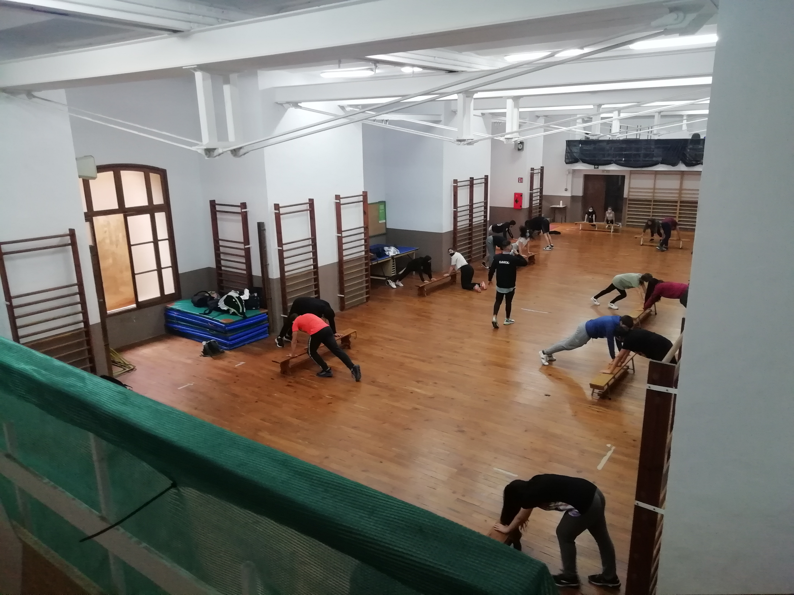

l'IES Ramon Llull de Palma disposa d'un gimnàs dins de les seves instal·lacions. Aquest espai s'utilitza principalment per a les classes d'educació física, però també ha estat escenari d'activitats culturals i artístiques. Per exemple, durant la celebració del centenari del centre, els alumnes van idear obres teatrals que es van representar en diversos espais de l'institut, inclòs el vestuari del gimnàs
